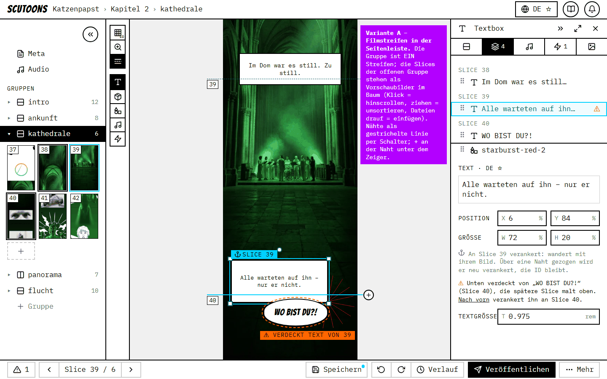

agents/research/TEXT-ACROSS-SLICES.md §4. Statische Bilder (echte Tokens, echte Slices aus Kapitel 2), keine App.
Die Gruppe wird als EIN Streifen bearbeitet; Texte und Stücke dürfen über Nähte reichen und bleiben an ihrer Slice verankert.
Wahl 1 – wo die Slices verwaltet werden

A – Filmstreifen in der Seitenleiste, Nähte per Schalter · HTML